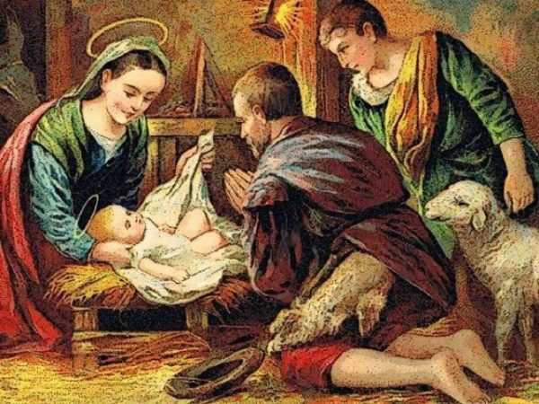
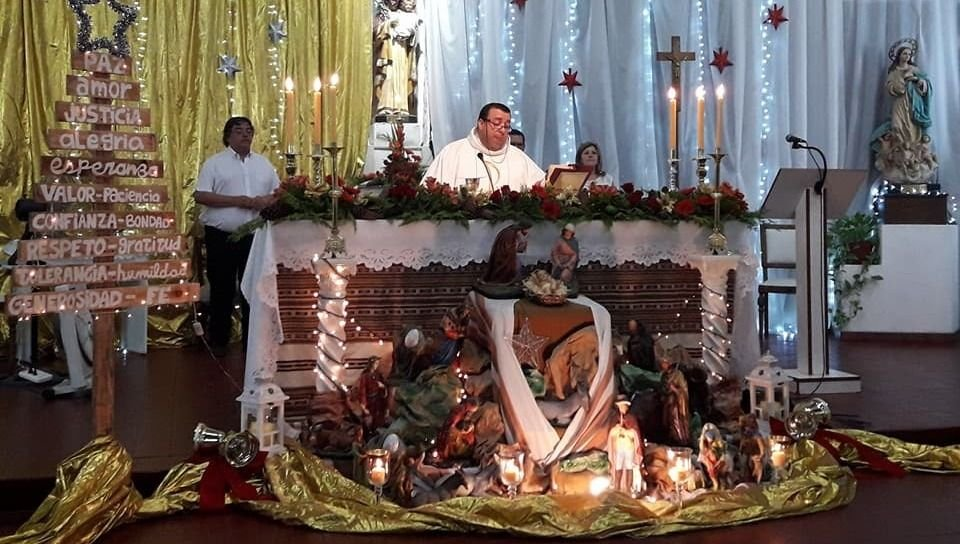

La Navidad es una celebración religiosa cristiana en la que se conmemora el nacimiento de Jesús o Jesucristo. Y, según algunos historiadores, se realiza el 25 de diciembre pues este día coincidía con la fiesta romana del dios Apolo. Gracias a esto, los «infieles» o «paganos» podían ser evangelizados con mayor facilidad..
Origen
La palabra Navidad proviene del latín nativitas, ‘nacimiento”. El mismo origen tienen el francés Nöel, el italiano Natale y el portugués Natal. En inglés, la festividad recibe el nombre de Christmas (Mass of Christ ’s day, ‘día de la misa de Cristo’). En alemán se denomina Weihnachten, ‘noche sagrada’.Según el Evangelio de Lucas, un ángel anunció a los pastores el nacimiento de Jesús.
.

Celebracion Liturgica
La celebración de la Navidad quedó firmemente establecida a partir del siglo IV. Sin embargo, recién en el siglo IX la Iglesia católica adoptó una liturgia específica para esa festividad. Esta incluye tradicionalmente la celebración de cuatro misas: la Misa de vigilia (Misa de Gallo) la Misa de medianoche, la Misa del alba o de la aurora y la Misa del día.
En el calendario litúrgico, la Navidad está precedida por las cuatro semanas del tiempo de Adviento, el período de penitencia y de preparación de la Navidad. La celebración de la Navidad marca el inicio del tiempo de Navidad, que se extiende desde el 25 de diciembre hasta la fiesta del Bautismo del Señor (entre el 9 y el 13 de enero, según los años). Fuera de la Iglesia católica, el tiempo de Navidad dura 12 días, del 25 de diciembre al 5 de enero.
.

Tradicciones
La Navidad está asociada a varias tradiciones. Algunas de ellas son actualmente de alcance casi universal:
El árbol de Navidad.
Arbol, un pino o abeto, se convirtió así en un símbolo del nacimiento de Jesús. Desde el norte de Europa, esta tradición se difundió al resto del mundo. En los hogares católicos, el árbol se prepara el 8 de diciembre, día en que se celebra la fiesta de la Inmaculada Concepción de la Virgen.
El pesebre.
En los hogares católicos, el pesebre se arma el 8 de diciembre, junto con el árbol de Navidad.
Los pesebres, también llamados belenes o nacimientos, fueron popularizados por San Francisco de Asís.
Papá Noel.
La figura de este personaje, también conocido como Santa Claus, San Nicolás y, en Chile, como Viejito Pascuero, proviene de la leyenda en torno a San Nicolás de Bari, un obispo del siglo IV que vivió en Turquía y de quien se cuenta que arrojó por una chimenea dinero a un padre que no podía casar a sus tres hijas solteras, por carecer de dote. Se atribuye a los holandeses, quienes fundaron Nueva Ámsterdam (la actual Nueva York), haber llevado la figura de Santa Claus a América, junto con la costumbre de entregar regalos.
Corona de Adviento.
La corona de Adviento, formada por un corona de ramas de pino o abeto y cuatro velas, representa la espera y la preparación de la Navidad, durante las cuatro semanas que le preceden. Cada vela simboliza un domingo de Adviento.
Los villancicos.
Estas canciones populares navideñas fueron en sus inicios, en el siglo XIII, composiciones de temas profanos. A partir del siglo XVI, la Iglesia empezó a promover los villancicos de temática religiosa.
La cena de Nochebuena.
Durante la víspera de Navidad es habitual en muchos sitios que las familias se reúnan para compartir una cena abundante. Los platos varían de un país a otro, de acuerdo con la gastronomía propia de cada lugar. Al llegar las doce de la noche, se realiza un brindis. En muchos países, se hace el intercambio los regalos, colocados junto al árbol. En otros países, los regalos se abren el día 25 por la mañana.